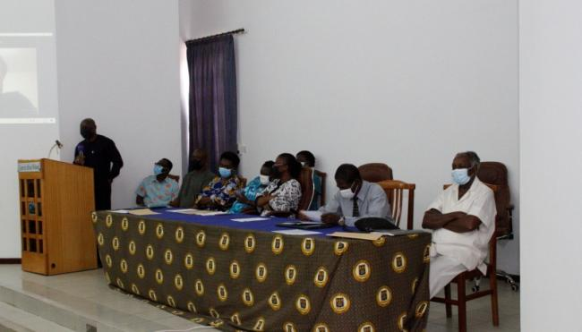

The University of Ghana was founded in 1948 as the University
College of Gold Coast upon the recommendation of the
Asquith Commission on Higher Education in the then British
colonies. Informed by colonial policies, access to higher
education by Africans was limited until the end of World War
II. The founding of the University of Ghana was therefore the
culmination of struggles and protests of nationalist movements
which advocated for an African system of higher education in the
former Gold Coast.
Between 1948 and 1961, the University entered into a special
relationship with the University of London to offer limited
programmes of study. However, by an Act of Parliament on October
1st 1961, the University attained sovereign status with the authority to
offer more comprehensive programmes and award its own degrees.
The University’s sovereign status together with the aspirations of
the new independent state of Ghana formed a catalyst for its rapid
growth in the 1960’s and the emergence of the University of Ghana’s
distinctive identity as a world class centre of academic excellence and
a leader in career training and professional development.
Thus in over six decades, the University of Ghana has evolved into one
of Africa’s leading universities, recognised worldwide for the academic
excellence of its faculty and student body and for the professional success
of its alumni.
Profile
The University of Ghana, the premier university and the largest university in Ghana was founded as the University College of the Gold Coast by Ordinance on August 11, 1948 for the purpose of providing and promoting university education, learning and research.
As a University poised to distinguish itself in the area of research to make an impact at the national and international level, the University has launched a new Strategic Plan.
Strategic Plan.
This new strategic plan (2014-2024) is intended to consolidate the gains made from the review of the University’s mission and practices and situate these within the context of a very dynamic environment of higher education in Ghana and beyond.
The University of Ghana is a centre of academic
excellence recognised worldwide for the academic
excellence of its faculty and student body and for the
professional success of its alumni.
To develop world-class human resources and
capabilities to meet national development needs
and global challenges through quality teaching,
learning, research and knowledge dissemination.
We will create an enabling environment that makes University of Ghana increasingly relevant to national and global development through cutting-edge research as well as high quality teaching and learning.
To develop world-class human resources and
capabilities to meet national development needs
and global challenges through quality teaching,
learning, research and knowledge dissemination.
Academia
The University of Ghana’s reputation as a centre
of academic excellence is underpinned by its
historic commitment to academic rigour, the
exceptional accomplishment of its faculty and
impactful research. Consistent with its mission
of “providing world class human resources and
capabilities”, the University’s Faculty work at the
forefront of academia, industry and governance
providing the needed leadership in research,
technology, policy and advocacy. The University’s
academic engagement is diverse and enriching.
As of the 2013/2014 Academic Year, the University
managed Memoranda of Understanding,
Staff/Student Exchange Protocols, and Project
Agreements with over 180 Universities, Partner
Institutions and Foundations across the globe.
In that same Academic Year, the University
published 1,070 publications and 1,300 research
projects. So much of what the University stands
for lies in its ability to fashion strategies and
solutions to address the broader intractable
socio-economic challenges facing the world.
Using its range of expertise, the University
is actively engaging intellectual and social
communities in seeking actionable solutions to
these challenges.
Campus Facilities & Residence
The University provides student accommodation for
most undergraduates for at least four years.
When you live in any of our Residence Halls, you have the
freedom to make it a real home away from home. If you
have little or no knowledge about our traditional halls of
residence, you would find the following information very
useful.
TRADITIONAL HALLS
MENSAH SARBAH HALL
John Mensah Sarbah (1864-1910) was an illustrious jurist, writer, statesman and the first Gold Coast barrister to be called to the English Bar in 1887. He used his legal acumen to check the excesses of British colonial rule; in particular land appropriations, arguing that land in Africa belonged to the natives and therefore appropriation by the British was illegal. In recognition of championing the course of natives and his contributions towards education, the University named the fifth hall of residence after him in 1960. Until 1991, it was the only mixed hall of residence on Legon campus.
KEY FACTS Established:
1960 Nicknames:
(VIKINGS) Number of students:
1,400 Amenities:
Kitchenette, Washrooms, Studyrooms. Major Annual Events:
Sarbah Day, Celebrity Alumni Platform. Motto:
Truth, Honour, Service Hall Master:
Prof. Dan Bright Dzorgbo Email:ughostels@ug.edu.gh Phone:+233 302 517143
JUBILEE HALL
Jubilee Hall was inaugurated in 1998 to commemorate the University’s Golden Jubilee. Modelled after Akuafo Hall and funded mainly by alumni of the University, the Hall is a group of four multi-purpose blocks containing single study bedrooms, self-contained flats and double rooms. Jubilee Hall also has rooms suitable for students with disabilities.
KEY FACTS Established:
1998 Number of students:
550 Amenities:
Kitchenette, Washrooms, Studyrooms. Hall Master:
Dr. Patrick Asamoah Sakyi Email:ughostels@ug.edu.gh Phone:+233 302 517143
COMMONWEALTH HALL
Originally known as the Third Hall, Commonwealth
Hall was officially commissioned in March 1957
to commemorate Ghana’s admission into the
Commonwealth of Nations. Prior to the official
commissioning, the Hall had previously admitted its first
batch of students into residence at the beginning of the
1956/1957 academic year. At present, Commonwealth Hall
is the only all-male hall of the University.
KEY FACTS Established:
1957 Nicknames:
(VANDAL)(Vivacious, Affable, Neighbourly, Devoted/Dedicated,Altruistic and Loyal) Number of students:
800 Amenities:
Kitchenette, Washrooms, Studyrooms. Major Annual Events:
Hall week, Minimpenim Motto:
Truth Stands Hall Master:
Prof. Frank K. Nyame Email:ughostels@ug.edu.gh Phone:+233 302 517143
VOLTA HALL
Volta Hall is the fourth hall of residence to be built by the
University of Ghana. Construction of the hall commenced
in the 1959-1960 Academic Year and officially inaugurated
on 16 November 1960. The original design of the hall
incorporated a main hall and an annex with rooming
capacity of 82 and 198 students respectively but has since
been expanded to accommodate more students. Volta
Hall is the only all-female hall of residence of the University.
KEY FACTS Established:
1960 Nicknames:
(LADIES WITH VISION AND STYLE) Number of students:
600 Amenities:
Kitchenette, Washrooms, Studyrooms. Major Annual Events:
Hall Week Celebration Motto:
Akokobere Nso Nyim Adekyee Hall Master:
Dr. Eureka Ahadjie Adomako Email:ughostels@ug.edu.gh Phone:+233 302 517143
AKUAFO HALL
Originally established with the appointment of Professor
D. A. Taylor in 1953, the second hall of residence of the
University was renamed Akuafo in appreciation of the
financial contributions by the farmers of Ghana towards
the establishment of the University College.
Akuafo Hall was officially inaugurated in 17 February 1956
even though it had admit\\\Sted its first batch of students
numbering 131 into residence on 5 October, 1955. The Hall
was converted into a mixed hall of residence in October,
1991.
KEY FACTS Established:
1953 Nicknames:
(THE FARMERS) Number of students:
1,200 Amenities:
Kitchenette, Washrooms, Studyrooms. Major Annual Events:
Farmers Hall Week Motto:
Laboremus et Sapiamus Hall Master:
Dr George Akanlig-Pare Email:ughostels@ug.edu.gh Phone:+233 302 517143
LEGON HALL
Legon Hall is the premier hall of the University of Ghana.
Construction commenced in the Michaelmas Term of
1951 as an all-male hall. The first batch of undergraduate
students was accepted into residence in September 1952.
In October 1991, the hall was converted into a mixed hall
of residence.
KEY FACTS Established:
1960 Nicknames:
(HALL OF LADIES AND GENTLEMEN) Number of students:
1,200 Amenities:
Kitchenette, Washrooms, Studyrooms. Major Annual Events:
Trinity Sunday Motto:
Cui Multum Datum “To whom much is given...” Hall Master:
Mr. Alfred Quartey Email:ughostels@ug.edu.gh Phone:+233 302 517143
DIASPORA HOSTELS
HILLA LIMANN HALL
Hilla Limann Hall was inaugurated by the University in honour of the third President of Ghana, Dr. Hilla Limann a former president of the Republic of Ghana from 1979-1981. Dr. Hilla Limann, a distinguished diplomat and academic, is recognised in Ghana and abroad for his zeal for multiparty democracy, statemanship and intellectual integrity. In recognition of his significant contribution to national development, particullarly promoting education, the University decided to immortalise the virtues and principles Dr. Hilla Limann stood for by commissioning a new hall of residence in his honour. Dr. Limann studied political science at the London School of Economics and obtained a diploma in French at Sorbonne University, France in 1960. He also obtained a BA (Hons) degree in History at the University of London and a PhD in Politcal Science and Constitutional Law at the University of Paris.
KEY FACTS Established:
2010 Number of students:
1,700 Amenities:
Kitchenette, Washrooms, Studyrooms. Hall Master:
Dr. Akwasi Mensah-Bonsu Email:ughostels@ug.edu.gh Phone:+233 302 517143
ELIZABETH FRANCES B. SEY
The Fourth new Hall of Residence is named after Mrs.
Elizabeth Frances Baaba Sey. This is a deliberate decision
by the Management of the University to immortalise
the name of the first Ghanaian woman graduate of this
University.
KEY FACTS Established:
2010 Number of students:
1,800 Amenities:
Kitchenette, Washrooms, Studyrooms. Hall Master:
Prof. Francis Gbogbo Email:ughostels@ug.edu.gh Phone:+233 302 517143
JEAN NELSON AKA
Jean Nelson Aka Hall was inaugurated in 2010 in honour
of Dr. Jean Nelson Aka, a distinguished alumnus of the
University. He was passionate and admirably committed
in his service to the University of Ghana. So devoted
was he to the interests and progress of his alma mater
that he played an active role towards the University’s
50th anniversary in 1998. He was also one of the main
drivers behind the construction of the Jubilee Hostel, an
initiative of the Alumni Association. In 1999, at a Special
Congregation, the University conferred upon him the
Doctor of Laws (Honoris Causa) in the category of “Alumni
who have made the University proud”. Dr. Aka was a
former Managing Director of Ecobank Ghana Ltd. He
obtained both BSc. (Administration) Degree and Master
of Business Administration (MBA) Degree in Finance from
the School of Administration (now University of Ghana
Business School) in 1972 and 1976 respectively.
KEY FACTS Established:
2010 Number of students:
1,800 Amenities:
Kitchenette, Washrooms, Studyrooms. Hall Master:
Dr. Thomas Aquinas Adjadeh Email:ughostels@ug.edu.gh Phone:+233 302 517143
ALEXANDER A. KWAPONG HALL
Alexander Adum Kwapong Hall was inaugurated in 2010 in
recognition of the excelling virtues of Professor Alexander
Adum Kwapong; an exceptionally accomplished classicist
and an authority on higher education development, he
participated in shaping the University of Ghana in its early
years. Professor Kwapong was educated at Achimota
College in Ghana and Cambridge University, UK, where
he graduated with First Class Honours in Classics in 1951.
He joined the faculty of the University of Ghana in 1953,
received his PhD in Classics in 1957 and became a full
professor in 1962.
He taught Greek, Latin and Ancient History at the
University for more than a decade and served as Pro-Vice
Chancellor, working alongside Connor Cruise O’ Brien,
the then Vice Chancellor. In 1966, he became the first
Ghanaian appointed as a Vice-Chancellor of the University
of Ghana and ended his tenure in 1975.
KEY FACTS Established:
2010 Number of students:
1,700 Amenities:
Kitchenette, Washrooms, Studyrooms. Hall Master:
Dr. Stephen Afranie Email:ughostels@ug.edu.gh Phone:+233 302 517143
International Students’ Hostel
The International Students Hostels were
established to create and strengthen links
with other universities in order to enhance the
international student presence on UG campus.
The first phase of the International Students
Hostels project was inaugurated in June 1999 and
the second phase in January 2006. The hostels
are co-educational and each has 43 single rooms
and 85 double rooms. The facility also has a
well-fortified security system, kitchenettes and
restaurants.
INTERNATIONAL HOSTEL House 2
INTERNATIONAL STUDENTS’ HOSTEL Email:
ughostels@ug.edu.gh Phone: 0302 517 143
POSTAL SERVICES
Located in the University’s Commercial Area
(opposite Legon
Hall), the University Post Office is responsible for
the mailing needs of the University community.
The Post Office which is a branch of the Ghana
Post provides express, registered and special
delivery mail services. It also stocks stationery and
souvenirs.
BANKING FACILITIES
Most banks in Ghana have branches or Automated
Teller Machines (ATM) located at the University of
Ghana campuses. Students will find it convenient
to use any of the campus banks. Many banks on
campus offer special student banking services
aimed at their specific needs.
BOOKSHOP
The University of Ghana Bookshop is located within
the University Square on the Legon Campus. It is
close to the Standard Chartered Bank and Barclays
Bank, on the same block with the African Virtual
University.
The Bookshop stocks a wide range of prescribed
and recommended textbooks and reading
materials.
BALM LIBRARY
The Balme Library, Established in 1948, the Balme Library, names after
the first Principal, David Mowbray Balme, is the
main library of the University of Ghana. In addition
to the Balme Library, there are other libraries in the
various Schools, Institutes, Departments,Halls of
Residence and the Accra City Campus which form
the University of Ghana Library System.
The central location the Balme Library, its facilities
and the scope of coverage of the collection make
it a very important and vital part of academic life
on campus.
THE BALME LIBRARY Director:
Prof. Perpetua Sekyiwa Dadzie Location:
University Square Working Hours:
Monday - Sunday, 8am - 10pm Email:admin@libr.ug.edu.gh Phone:0302 512 407(8)
THE GREAT HALL
The Great Hall, with a seating capacity of 1,500 and a Tower donated by the Government of Ghana in 1957 to commemorate Ghana’s Independence.Grande auditorium, with vast airspace and very high ceiling. The stage is well set, cool podium, interior decor is antique and professional looking. Surroundings are very neat and well maintained. The seating is a bit hard on the butt though. No air conditioning, but no need for it really, with all that ventilation. The speakers sound great, but give feedback at times. Dual Projectors, one on each side, however, it's still hard to see from the back. When the main hall is full, more people can sit at the surroundings but they usually suffer poor sound and can't see what is projected. Lighting inside is great. Generally a magnificent place, and serves its purpose quite well.
DIASPORA HOSTELS
The Diaspora Halls are also available for freshers to book online. Compared to the traditional halls, the Diaspora Halls have spacious or bigger rooms and each room has its own washroom inside. The washroom facilities are not shared, unlike the traditional halls. This means however that the diaspora halls are more expensive compared to the traditional ones.
Hilla Limann Hall,
Alexander Kwapong Hall,
Elizabeth Frances Sey Hall,
Jean Nelson Hall.
You are required to make payments annually and quickly to keep staying in the halls if you want to continue staying there. You can however decide to move to other hostels around legon as well.
For continuing students who wish to seek accommodation at the halls, you would have to contact the various halls to pick up a form to book for a room if there are any.
All students who have been admitted at full-time Legon campus and Korle Bu Campus are required to make residential applications.
UNIVERSITY OF GHANA PLATFORMS
SAKAI
Sakai is an online educational platform where learning materials,assignment(Quizes,test), and Grades are made available to students.
The University of Ghana’s Required Courses (UGRCs) are
a unique general education programme which is intended
to provide a rewarding experience for all students who
undertake undergraduate studies in the University. The
interdisciplinary courses in the programme are intended
to foster broad student familiarity with key advances in
the humanities, science and technology. It is expected
that these compulsory courses will, in combination with
students’ main areas of study, produce students who are
equipped to meet the development needs of Ghana and
Africa and equip graduates of the University of Ghana to
be confident, rounded scholars capable of holding their
own with graduates from any part of the world.
NB:Details of the semesters in which students of
various colleges are expected to take University Required
Courses may be found in the programme structure for
each Department/School.
Academic Writing
Understanding Human Societies
Science and Technology in our Lives
Critical Thinking and Practical Reasoning
Liberal and African Studies
Numeracy Skills
UGRC: UNIVERSITY OF GHANA REQUIRED COURSES
Rt. Hon. Speaker of ParliamentA glance of UG required courses
UGRC 110: ACADEMIC WRITING
The main objective of Academic Writing I is to equip
students with the language skills that will enable them
to read and write effectively. Students will be taken
initially through fundamental issues in grammar and
composition in order to consolidate their language skills
in these areas. Subsequently, reading and writing skills
relevant to university work will be introduced. These will
include the structure of the essay, unity, completeness
and coherence in essay writing; summarising as a skill
basic to exposition, writing from sources, referencing
skills and avoiding plagiarism. The course will be taught
in small groups and class activities are characterised by
group work,oral presentations and extensive practical
assignments.
UGRC 130: UNDERSTANDING HUMAN SOCIETIES
The course is designed for students pursuing sciencerelated
programmes at the undergraduate level. The aim
of the course is to introduce students to the broad array of
issues that shape human societies. The course is divided
into two main parts. Part I seeks to introduce students to
the evolution of human societies, the economic basis of
human societies, and governance in societies. It covers
the first three weeks of lectures and it is compulsory for
all students. Part II covers 10 weeks, and aims to ground
students’ understanding of human societies on six
selected areas, each constituting a module: the economy
and business; culture and development; governance in
the information society; human behaviour and the social
environment; religion and societies; and language in
society. Students are expected to select one out of the six
modules provided.
UGRC 120: NUMERACY SKILLS
This course is designed for students to acquire basic
numeracy skills needed for solving real life problems. It
involves the following: review of basic algebraic skills; rates
(fractions, proportions and percentages); approximating
numbers (rounding up of numbers and significant
numbers); mathematical reasoning, (deductive and
inductive reasoning); statements; truth tables; necessary
and sufficient conditions; basic set theory; nature and uses
of statistics; sources of data; data types and measurement
scales; methods of data manipulation (aggregation and
interpretation); basic probability with illustrations from
various disciplines; establishing relationships between
variables, and the use of basic computer packages such
as Excel in analysing data.
THE ARMS OF THE UNIVERSITY
Prior to its attainment of a sovereign university status,
the motto of the University of Ghana, then known as
the University College of Gold Coast was “vigil evocat
auroram” by a cockerel - the watchful bird
calling forth the dawn, i.e. keeping vigil to protect
its academic freedom from being eroded through
political intervention in its affairs.
In 1961, the University attained a sovereign status and
by 1963, it was felt that inspiration for its growth could
best be drawn from Ghana’s cultural roots preserved
in a new motto and a new crest. To this end, Professor
A.A Kwapong, the first Ghanaian Pro-Vice Chancellor,
tasked Professor Manwere Opoku of the Institute of
African Studies (IAS) to design the crest.
Professor Opoku chose the symbol of three straight
ferns (aya in Twi), which because of their quality of
always growing straight up in the forest represent,
in traditional thought, straightness, truthfulness,
integrity. He also took the symbol of two interlocking
ram horns (in Twi - guanini mmen toa so) which never
stop growing therefore depicting progress. Professor
Kwapong then provided the Latin rendering of the
motto “integri procedamus” with integrity,
inscribed beneath the symbols.
One area where the University of Ghana has excelled
time after time is the professional achievements of
its alumni. This is deeply rooted in the University’s
curricular and extracurricular programmes which
prepare students from diverse backgrounds to be leaders
and productive members of society.
The University’s alumni are leaders in Agriculture, Business,
Healthcare, Manufacturing, Service, Media, Politics and
Education sectors and play critical roles in socio-economic
development of Ghana. Many of the University’s alumni are
also known globally for their contribution to the advancement
of the human society.
Prof. Mike Oquaye Rt. Hon. Speaker of Parliament
Name
Year Group
Status
Justice Sophia Abena Boafo Akuffo
1972
Chief Justice, The Republic of Ghana
Justice Georgina Wood
1970
Former Chief Justice/Member, Council of State
Prof. Kwabena Frimpong Boateng
1975
Minister of Environment, Science & Technology
Mrs. Dufie Agyarko Kusi
1972
Ghana’s Ambassador to South Korea
Dr. (Mrs.) Sylvia A.M. Boye
1962
Former Chair, West Africa Examinations Council
Mrs. Adelaide Mary Benneh
1968
Retired Banker, Former Principal, National Banking College
Dr. Ernest Addison
1986
Governor, Bank of Ghana
Ms. Phyllis Christian
1977
CEO, ShawBell Consul
Richard Obeng Okrah
1969
Board Member, VRA
Ms. Anna Bossman
1980
Ghana’s Ambassador to France
Clubs and Societies
The University of Ghana encourages and supports student
participation in a wide variety of co-curricular and extracurricular
activities designed to complement the classroom
experience.
Clubs and Societies revolve around academic disciplines,
social programmes, religious affiliations, professional careers,
international issues and philanthropic gestures. Every student
is encouraged to join and have a meaningful experience in the
activities of a club or a society.
A SAMPLING OF CLUBS AND SOCIETIES
Presbyterian Students’ Union
Pentecostal Students’ Union
Pax Romana
Ghana Muslim Students Association
Ahmaddiya Muslim Students’ Union
Methodist Students’ Union
Anglican Society
University Christian Fellowship
Nichiren Shoshu
The Political Science Students’ Association
Law Students’ Union
National Association of Science Students
Medical School Writers Club
Ghana Association of Medical Students
Agricultural Science Students’ Association
Ghana National Association of Teachers
Disabled Students’ Association
Child Survival Club
Rotaract Club
Student Services Organisation
International Students Association
Association Of Students Of Social Work
Creative Networking
Creative networking and team building skills are
invaluable to any goal oriented person wishing to
advance personally and professionally. In recognition of
this, the University of Ghana provides students with the
platforms to learn from and alongside the exceptionally
accomplished to advance society. Through annual
events and special activities organised by the various
Colleges, Schools and Departments, the University serve
to connect students with distinguished leaders, leading
edge experts and organisations involved in service
projects, research activities and programmes related
to academic specialisations, as well as a wide variety of
special interests.
RECREATION & SOCIALIZATION
Regardless of a student’s social background and interests, there is so much to do at the University of
Ghana. A student can join a club or association, run for
student office, participate in an outreach programme,
write for a journal, share in a sports activity or tour an offbeaten track.
Socialization
Financial Aid
A Supportive Environment
Through the Students Financial Aid Office (SFAO), the
University of Ghana makes every effort to provide financial
aid to qualified Ghanaian applicants of limited finances.
The SFAO handles limited financial aid intended to pay
for academic user fees. Financial Aid may be in the form of
full scholarship, partial scholarship and on-campus workstudy
or part-time job opportunities for students.
Who Qualifies?
Applicant seeking financial aid must meet all the under
listed criteria:
Be a Ghanaian citizen
Be enrolled as a student in a full-time programme
of study at UG.
Be able to demonstrate financial need
Must Be brilliant
Must be making excellent academic progress as
determined by the University.
Applicants seeking financial assistance are advised to
contact the SFAO at the Alumni Centre, Legon Campus or
through e-mail, finaid@ug.edu.gh for available packages
and deadlines for application.STUDENTS FINANCIAL AID OFFICE Postal address:
Student Financial Aid Office
University of Ghana, Legon Head:
Mrs. Christine Baning Location:
11 East Legon Rd near School of Agriculture Working Hours:
8am-5pm Email:finaid@ug.edu.gh Website:www.ug.edu.gh/sfao.php Phone: 0302 285312
NB:Local students are also eligible to apply for students loan(SLTF) to financiall
help then. Website:www..sltf.gov.gh
Health Service
Since its inception in October 1951, the University Hospital
continues to meet most health care needs of students, staff and
the general public.
The facility, which is located at the southern part of Legon Campus
consists of an Out Patient Department (OPD), Emergency Unit,
Operating Theatre, Dental Clinic, X-Ray Department, Laboratory
& Ward Section and Paediatric Ward.
Clinical services offered include:
Pharmacy
Emergency care
Testing and immunisation
Care for pre-existing conditions
Physical examinations
NB:Both newly enrolled students and new staff appointees are given
a thorough medical examination by the University Hospital.
THE UNIVERSITY OF GHANA HOSPITAL Postal address:
P.O. Box LG 79
University of Ghana, Legon Director:
Dr. Christian K. Amenuveve Location:
Near Legon Police Station Working Hours:
24hrs Email:ughosp@ug.edu.gh Phone: 0302 050 052 / 0302 500 052
Students with Special Needs
Consistent with the University’s policy of equal opportunity in
education and to ensuring that students with disabilities have as
complete and equitable access to all facets of University life as can
be reasonably provided, the Office of Students with Special Needs
(OSSN) assists students with special needs with appropriate
provisions throughout their stay at the University.
Students with any form of disability may find the OSSN helpful.
In addition to identifying their personal needs, the OSSN
endeavours to provide support in the form of braillers, readers,
interpreters, enlarged prints, note-takers and alternative
examination arrangements. These support services are not
preferential treatments, but are aimed at ensuring equal
opportunity and access for students with disability to achieve
optimum academic outcomes. Students with the under
listed categories of physical/health challenges or any other
special needs are encouraged to register with the OSSN.
Hearing Impairment/Deafness
Visual Impairment/Blindness
Specific Learning Difficulties
Physical Disability
Medical Disability
Mental Health Difficulties
CAREERS AND COUNSELLING CENTRE Postal address:
P.O. Box LG 25
University of Ghana, Legon Dean:
Mrs. Jocelene Buckman Location:
Behind the Dept. of Linguistics, Adjacent the Sociology Department Working Hours:
8am - 5pm Email:counsel@ug.edu.gh Phone:0302 507 147
University Anthem
Hail University of Ghana
The nation’s hope and glory
The place that bears the star of peace
That bids us all to do our best
Let the great tower of learning
Inspire both young and old
May we proceed in unity to uphold the public cause
//: Arise, arise O Legon Defend the cause of freedom
Proceed in truth and integrity to make
Our nation proud ://
We ask for strength and wisdom
As we climb the hill of learning
May we excel in what’er we do
With a mind ready at all times
And a conscience quick to feel
May we proceed in unity to uphold the public cause
//: Arise, arise O Legon Defend the cause of freedom Proceed in
truth and integrity to make Our nation proud ://
NB:The University's anthen insteals moral decipline and knowlege. It voice out the prone success
of every individual and bring forth integrity within it's community.
Careers & Counselling Centre
The Careers and Counseling Centre (CCC) provides
comprehensive, professional counselling as well as a
career and placement services to individuals and groups.
The Centre also sponsors various programmes to help
students and staff manage personal concerns ranging
from short- term academic, social, personal and family
concerns to longer-term emotional and psychological
problems. Career events are organised annually by the
Centre to enhance CV writing skills, interview techniques
and career exploration. All the services of the CCC are
confidential and free to students and staff.
The CCC’s services to students and alumni include:
Assisting students with self-assessment, career choice,
and self- penetration, including writing of applications
and resumés, and performance at interviews;
Organising annual colloquia between students and
representatives of major employment organisations at
which students learn about the functions and operations
of major establishments in the country, the range of jobs
offered to university graduates, and the corresponding
qualifications and personal attributes required;
Students and alumni are assisted to get placement on
jobs through introductory letters, direct canvassing by the
Centre and liaison with employers for campus interviews.
CAREERS AND COUNSELLING CENTRE Postal address:
P.O. Box LG 25
University of Ghana, Legon Dean:
Mrs. Jocelene Buckman Location:
Behind the Dept. of Linguistics, Adjacent the Sociology Department Working Hours:
8am - 5pm Email:counsel@ug.edu.gh Phone:0302 507 147
Food & Nutrition
All the three campuses of the University offer a wide
variety of food and numerous eateries serving both local
and continental dishes.
Most restaurants, fast foods joint, bars and outdoor dining
places are located within or close to the halls of residence,
hostels colleges and schools. The variety of food choices
in the University community allow for different tastes and
needs.
The various halls of residence and hostels have kitchens
and cooking space for students who wish to cook their
own meals.
Shops and groceries are convenienly located near halls of
residence and hostels.
Popular food joints include:
Bush Canteen
Night Market
Central Cafeteria(CC)
Others
Various halls/hostels
Departments
Some Lecture Halls
Campus Canteen
Sports for Academic Credit
UG encourages and supports its students who spend
their time, energy and resources to train and compete for
honours for the University in particular and the nation as
a whole.
The university has therefore initiated a Sports for Academic
Credit Programme. This is intended to integrate sports
into the academic programme of the University to enable
eligible students earn credits for sports and sport-related
courses, which would count towards their total credits
earned. Students can be considered for sports credit
from their second year based on their previous sports
performance in the University. Enrolment is on the basis
of application to and recommendation from the Sports
Directorate and approved by the appropriate Dean.
Sports performers can earn a maximum of 3 credits per
year on the programme, with a maximum of 6 credits
during their course of study in the University. Courses
under the programme will be graded in accordance with
the University of Ghana’s grading system. Practical and
theory sections will take 50% each of the final grade.
International Students
A Global Community
The University of Ghana has a rich history of providing
exceptional,cross-cultural learning experience for
international students.
With the first enrolment of 86 International Students in
the 1961/62 Academic Year, enrolments of International
Students have grown considerably spanning the African
continent, Europe, Asia and Americas. At present,
International students number close to 1,500 students
drawn from over 71 countries.
The University through the Office of International
Programmes encourages participation of International
Students through direct enrolment and exchange
programmes. The Office also promotes and co-ordinates all
the University’s external relations, including international
students, scholars on various exchange programmes, staff
on exchange and external staff training programmes.
INTERNATIONAL PROGRAMMES OFFICE (IPO) Dean:
Prof. Ama de-Graft Aikins Location:
International House, opposite the School of Law, Legon Working Hours:
8am- 5pm Email:info.ip@ug.edu.gh Phone: +233-303937244, +233-289601828
The University Campuses
The University’s distinctive specialised teaching and
impactful research is carried across three campus
communities – Legon Campus, Accra City Campus and
Korle-Bu Campus.
Legon Campus(Main Campus)
Legon comes from two indigenous Ga words: “ni-le”
which is translated “knowledge” and “gon” which is
translated as “hill”; thus Legon is the rendering of “nilegon”
- “hill of knowledge”; aptly describing the 121 metre
altitude of the Legon Campus.
Located 13 kilometers northeast of Accra, Legon Campus
is recognised as the nerve-centre of Ghana’s premier
academic resource. It houses the central administration
and the five traditional Halls of the University - Legon,
Volta, Commonwealth, Akuafo and Mensah Sarbah. Many
of the academic, residence and support service facilities
which were commissioned in the 1960s and 1970s have
undergone renovation and expansion. Recent projects
include VALCO Trust Hostel (1997) Jubilee Hall (1998),
International Students Hostels (1999) and Hilla Limann,
Alexander Adum Kwapong, Jean Nelson Aka (2010) and
Elizabeth Frances B. Sey Halls (2012).
Korle Bu Campus
The Korle Bu Campus is located 3 kilometres from
Accra’s Central Business District. It houses the College of
Health Sciences comprising the School of Medicine and
Dentistry, School of Public Health, Noguchi Memorial
Institute for Medical Research, the School of Allied
Health Sciences, the School of Nursing and the School of
Pharmacy.
Affiliated with the College of Health Sciences is the Korle
Bu Teaching Hospital, the largest teaching hospital
in Ghana. The stimulating academic experience at
the Korle Bu Campus is further enriched by three
centres of excellence: National Cardiothoracic Centre,
National Plastic and Reconstructive Surgery Centre and
Radiotherapy Centre.
Accra City Campus
The Accra City Campus was originally established during
the 1963/1964 Academic Session as the External Degree
Centre. Until it was restructured into the Accra City
Campus in 2002, it was known as the Accra Workers
College.
The City Campus offers mature persons and persons
who prefer not to study full time with access to many of
the degree programmes available on the main Legon
Campus. It is located within the Central Business District
of Accra.
Campus Experience
Campus experience is an integral part of the University
of Ghana’s educational experience. It is enriched by
the diversity of students and faculty across the globe,
engaging academic and practical assignments,
recreation and socialisation, vibrant student governance
and creative networking.
Residential and non-residential students have ample
access to the University’s academic resources – colleges
& schools, lecture halls, libraries and research facilities.
Students also benefit from an array of non-academic
resources such as the University Hospital, Postal & banking
services, eateries, shops, copy centres, sports facilities, free
wireless internet and many more.
Why Choose The University Of Ghana?
Teaching and Learning:A World Class Provision
The University of Ghana
is an outstanding place
to be as a student who is
confident and determined to
succeed in this fast paced and
increasingly competitive world.
We provide excellent career
prospects at the graduate and
postgraduate levels as a result
of our commitment to quality
teaching, learning and the
pursuit of relevant research.

Socio-Political
The University of Ghana has consistently taken the
lead on socio-political issues that affect the greater
well-being of society.
Through the sustained attention of specialised
institutes and centres, topical and sometimes
controversial issues are studied, analysed and brought
to the attention of sector stakeholders and the public
domain for debate and redress.
The Institute for Statistical, Social & Economic
Research (ISSER) and Legon Centre for International
Affairs and Diplomacy (LECIAD) are just two of
the several institutes and centres that are at the
frontier of socio- political leadership. Whereas ISSER
is recognised for its authoritative socio-economic
analysis and reports, LECIAD has built an international
reputation for the depth and relevance of its timely
contribution to contemporary discourse, particularly
those pertaining to Africa. The University also serves
as an incubator for major associations, clubs, political
parties, lecture series, symposia and workshops.
The Annual “New Year’s School” and “Aggrey-
Fraser-Guggisberg Memorial Lectures”, for instance
have attracted eminent personalities from diverse
backgrounds discussing teething issues in leadership
and governance.
INSTITUTES & CENTRES AT THE FRONTIER
OF SOCIO-POLITICAL LEADERSHIP
School of Continuing and Distance Education
Institute of African Studies
Institute of Statistical, Social and Economic Research
Regional Institute for Population Studies
Legon Centre for International Affairs and Diplomacy
UG Language Centre
Centre for Social Policy Studies
Centre for Gender Studies and Advocacy
Centre for Migration Studies
International Centre for African Music & Dance
Contact Us
UNIVERSITY OF GHANA.
P.O.BOX 199
Box LG 256, Legon, Accra
Phone: +233(0)23-456-7890
OFFICE OF THE DEAN OF STUDENTS AFFAIRS Ag. Dean:
Prof. Godfred Bokpin Location:
Opp. the University Post Office Working Hours:
8am- 5pm Phone: 028 910 9099/030 250 0788 NB:This unit works closely with other departments within
the university to ensure that students derive maximum
academic and personal success from the University’s lifechanging
experience.
By working with Heads of Halls, the SRC, the Sports
Directorate, the Careers & Counselling Centre and the
University’s Public Affairs Directorate, the Office of the
Dean of Students’ Affairs assists students by:
Providing counselling and information services for students.
Administering non-academic student disciplinary system and student grievance procedure